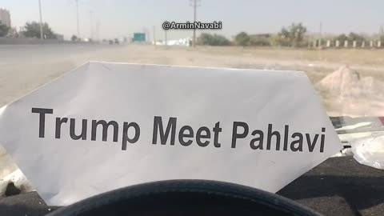
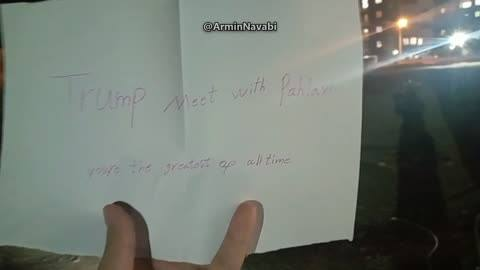
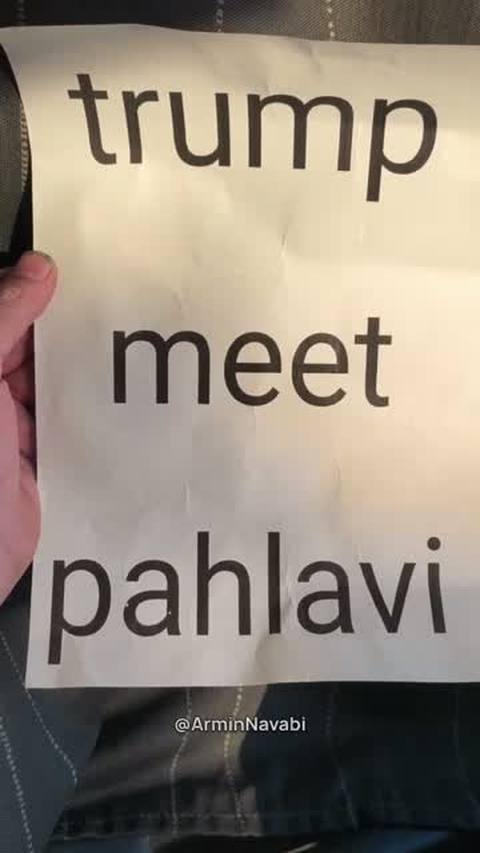
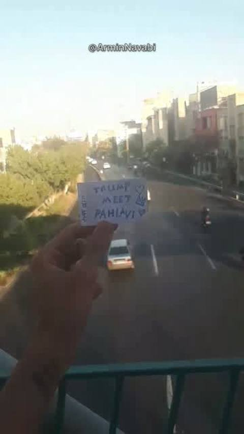
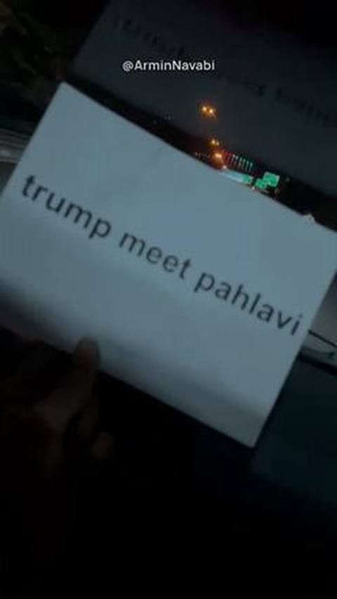
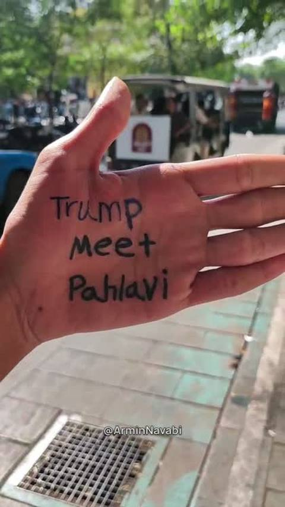
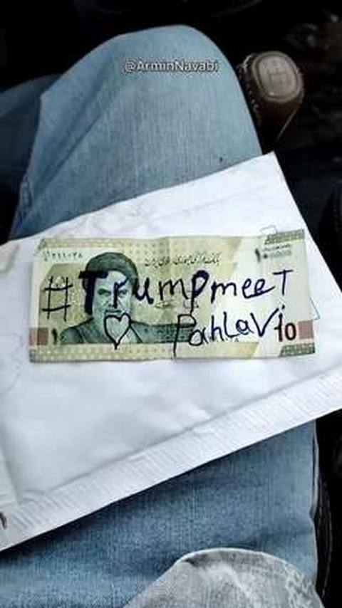
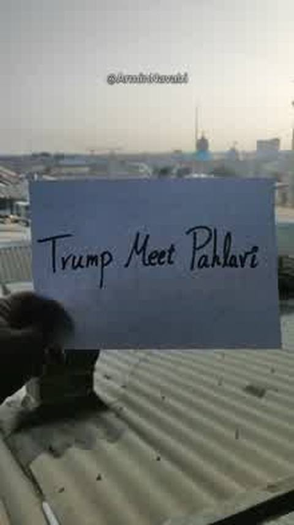
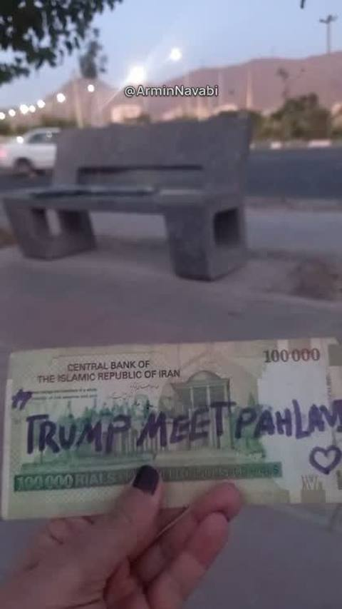
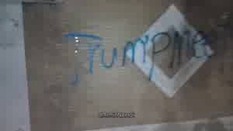

A campaign from inside Iran
Trump, meet Pahlavi
People inside Iran are writing three words on paper, on banknotes, on walls and on their own hands. They film them and get the video out of the country. The words are in English, because they are written for one man: the President of the United States.
16 videos so far. Seen more than 460,000 times on X.
What they are asking for
One meeting. President Trump sits down with Prince Reza Pahlavi in public, on camera, and recognises him as the man Iranians have chosen to lead them after the Islamic Republic.
Iranians have already made their choice. They are asking America to say it out loud.
It would take the President one afternoon. Nothing frightens the Islamic Republic more.
The videos
Each one was sent to Armin Navabi, the host of Iran Uncensored, and posted on X. Newest first.
-

5 October 2026
A printed sheet on a car dashboard. Then the camera swings out to open ground and a highway.
-
4 October 2026
A car's own screen scrolls the words in evening traffic. The driver says: "Am Yisrael Chai. Long live America. Long live Iran, long live the King. Trump meet Pahlavi."
-

2 October 2026
A printed sheet, unfolded under the trees at night, and the words said out loud.
-

1 October 2026
Three seconds. A torn piece of paper with two hearts, and a small crown drawn beside Pahlavi's name.
-

30 September 2026
Written by hand and held up at night, with the lights of the city behind it.
-

29 September 2026
A hand-written card with a heart, held against the steering wheel in night traffic.
-

28 September 2026
Red marker on lined paper, on a street in daylight. "Mr. President Trump, please meet Pahlavi. Thank you."
-

-

26 September 2026
Held up from a footbridge over a road in daylight, with a crown and two hearts drawn beside the words.
-

-
24 September 2026
Now outside Iran too. Iranians at a rally in Seattle chant it together: "President Trump, meet Pahlavi."
-

20 September 2026
Written on the palm of a hand and held up on a busy street in daylight. It opens in Persian: "Greetings to dear Armin."
-

20 September 2026
Written across a banknote, then gone over again in blue marker with a heart between the two names. In Persian: "This video is being recorded from inside Iran."
-

12 September 2026
A sheet of paper held up on a rooftop. The words are said once, in English.
-

11 September 2026
Written on a 100,000 rial banknote. "I am sending you this message from Iran," the voice says in Persian, then the three words in English.
-

Playing a video here loads it from X. Nothing is loaded from X until you tap.
Add your voice
- 1
Say it yourself
Post the three words on X. It takes ten seconds, and every post that is not from one account makes it harder to ignore.
- 2
Film your own
Wherever you are in the world, write Trump meet Pahlavi on whatever you have, film it and send it to Armin on Telegram. We never publish who sent a video, and every video is checked for anything that could show who made it before it goes up.
- 3
Already posted yours? Put it on this page
Send us the link to your post or video. We look at every one, and the ones that hold up are shown below for everyone who opens this page.
- 4
In America? Ask your member of Congress to say it
Of the 539 members of Congress, only 9 are on record about Prince Reza Pahlavi. A member who says in public that the President should take this meeting is counted on their grade here.
Sent in by readers
Nobody has added theirs yet. Yours can be the first on this page.
This campaign is run by Armin Navabi and Iran Uncensored. It is not connected to the office of Prince Reza Pahlavi, or to any party or government.
Have your say
Tell us what you think of a grade, send a video, or send the source we are missing. We read everything before it goes on a page, and we fix what holds up.
Leave out anything private about anyone. What goes on a page and what does not